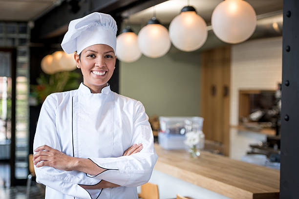
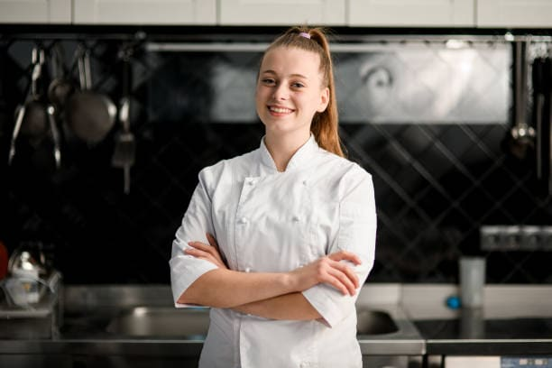
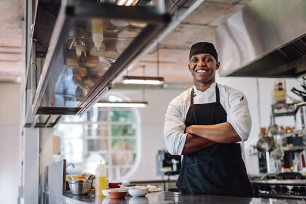

Pasión y Sabores: Descubre el Arte de la Cocina con Chef Marta
Para mí, la cocina es mucho más que una profesión, es un arte que permite transmitir emociones y despertar los sentidos a través de los sabores y aromas. Mi inspiración proviene de los ingredientes frescos y locales que selecciono cuidadosamente, y de las técnicas culinarias que he perfeccionado a lo largo de los años. Cada plato es una historia que cuenta quién soy como chef y cómo quiero cautivar a mis comensales. La pasión y el amor que pongo en cada creación se pueden saborear en cada bocado. Mi objetivo es llevar a las personas en un viaje culinario inolvidable, donde puedan descubrir nuevos sabores, texturas y combinaciones audaces. ¡La cocina es mi forma de expresión y estoy emocionada de compartir mi arte con el mundo!

Fusión Innovadora: Explorando Nuevos Horizontes Culinarios con Chef Made
La cocina es un vasto universo lleno de posibilidades y desafíos que me apasionan. Mi enfoque se centra en la fusión de culturas y sabores, creando platos que sorprendan y deleiten a los paladares más exigentes. Me encanta experimentar con ingredientes no convencionales y técnicas vanguardistas para ofrecer una experiencia gastronómica única. Para mí, la clave está en encontrar un equilibrio entre la tradición y la innovación, respetando los sabores auténticos y añadiendo un toque personal. Cada plato que creo es una expresión de mi creatividad y dedicación hacia la gastronomía. Mi objetivo es emocionar a los comensales, llevándolos en un viaje culinario que los haga redescubrir el placer de comer y explorar nuevos horizontes culinarios. La cocina es mi pasión y mi forma de compartir mi amor por la comida con el mundo

Delicias Creativas: Explorando el Lienzo Culinario con Chef Pepito
La cocina es mi lienzo y los ingredientes son mis pinceles. Cada día, me embarco en un viaje de descubrimiento culinario, explorando las profundidades de sabores, texturas y colores. Mi inspiración proviene de la naturaleza y la diversidad cultural que nos rodea. Me encanta combinar ingredientes inesperados y jugar con las presentaciones para despertar sorpresa y curiosidad en mis comensales. Además, creo en la importancia de utilizar ingredientes frescos y de temporada para resaltar su máximo potencial. Para mí, la cocina es un acto de amor y una forma de transmitir alegría a través de la comida. Disfruto viendo las sonrisas en los rostros de las personas mientras saborean mis creaciones. Cada plato que sirvo es un reflejo de mi pasión y dedicación hacia el arte culinario. Mi objetivo es crear experiencias gastronómicas memorables que inspiren a otros a explorar y disfrutar de la magia de la comida
